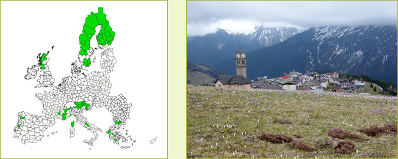

Highlights
- Almost 90% of the land in these regions is nature
or forest
- Concentration of hotspots of agricultural abandonment
- One third of farmland is threatened
- Open farmland landscapes disappear
- Erosion remains a problem especially in southern Europe
- Increase of potential biodiversity
- But loss of extensive agriculture related ecological
values
- Land-use change mainly agriculture towards abandonment
and nature
